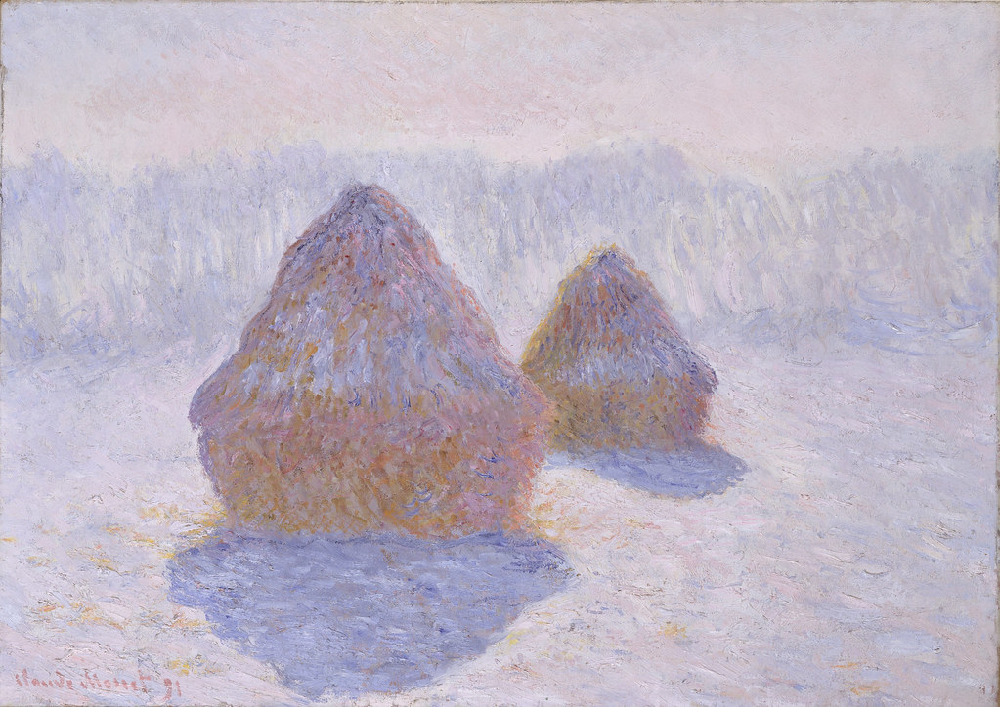

Lesson 2.2
Does the same thing always
look the same?
The answer is no — and the Impressionists built an entire movement on that discovery.
Step 1
Look at the light
around you right now.
Just notice. No drawing yet.
Step 2
Choose one object
near you.
A cup, a hand, a chair, a window.
Something ordinary.
Now observe how the light falls on it.
Where is it bright? Where is shadow?
References

Monet painted the same haystacks at dawn, noon, dusk, and winter. The subject never changed — only the light did.

Pissarro painted the same boulevard from the same window — spring morning, afternoon, rainy evening. Same street, different worlds.
Step 3
Return to your object.
How does light change it?
Step 4
Draw the object.
Focus on light — not the object.
You are not drawing the cup.
You are drawing where light lands on it
and where it disappears.
Step 5
Now
modify the light.
Step 6
Look at your two drawings
side by side.
The object did not change.
The feeling did.
This is what Monet understood.
Light is not decoration — it is
what gives things their character.
Light does not just illuminate —
it changes what you see.
You are now looking the way
the Impressionists looked.